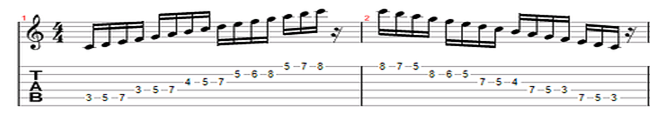
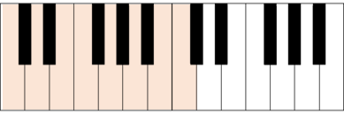
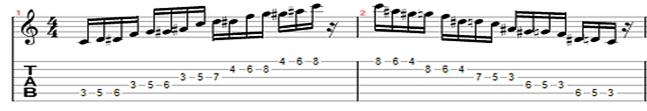

O que são escalas musicais?
Escalas musicais são sequências ordenadas de notas. Por exemplo: dó, ré, mi, fá, sol, lá, si, dó…repetindo esse ciclo. Nessa escala, começou-se com a nota dó e foi-se seguindo uma sequência bem definida de intervalos até o retorno para a nota dó novamente. Essa sequência de distâncias foi: tom, tom, semitom, tom, tom, tom, semitom…repetindo o ciclo.
Escala maior
Essa escala que mostramos é chamada de “escala maior”. Poderíamos utilizar essa mesma sequência (escala maior) começando de uma nota que não fosse dó, por exemplo, sol. A escala então seria sol, lá, si, dó, ré, mi, fá#, sol… Note como a mesma lógica foi seguida (tom, tom, semitom, tom, tom, tom, semitom).
No primeiro caso, formamos a escala maior de dó. No segundo caso, a escala maior de sol.
Seguindo a mesma lógica podemos montar a escala maior de todas as 12 notas que conhecemos. Faça isso como exercício e depois confira abaixo. Mostraremos a escala maior das 7 notas básicas:

Escala menor
A chamada “escala menor” é formada a partir da seguinte sequência: tom, semitom, tom, tom, semitom, tom, tom…repetindo o ciclo.
Vamos construir então a escala de dó menor. Você já é capaz de construir essa escala. Basta seguir essa sequência dada começando pela nota dó. Fica assim:
dó, ré, ré#, fá, sol, sol#, lá#, dó… repetindo o ciclo.
As notas ré#, sol# e lá# equivalem, respectivamente, a mib, láb e sib. Poderíamos reescrever então a sequência acima como:
dó, ré, mib, fá, sol, láb, sib, dó.
Note que a escala é absolutamente a mesma; a única diferença é que antes ela estava escrita com sustenidos (#), e agora ela foi escrita com as alterações bemóis (b). Geralmente a escala menor de dó é escrita da segunda forma e não da primeira. Por quê? Simplesmente porque nela todas as 7 notas apareceram (com ou sem alterações – sustenidos/bemóis). No primeiro caso, a nota si não aparece. Isso muda alguma coisa? Faz diferença? Não. Mas nas literaturas você provavelmente vai encontrar a segunda descrição, pelo motivo mencionado.
Na realidade, a preferência pela segunda descrição tem um sentido mais profundo, pois facilita a observação das funções harmônicas, mas não se preocupe com isso agora.
Confira então as digitações (em partitura e tablatura) da escala maior e da escala menor de Dó:
Escala Dó maior
Obs: caso você seja tecladista/pianista e ainda não aprendeu partitura, confira a digitação no teclado abaixo:
Escala Dó menor
Obs: No braço do violão/ guitarra, para se obter a escala de outra nota (além da nota “dó” que mostramos), basta deslocar esse mesmo desenho para a nota que se deseja. Experimente testar fazendo esse mesmo desenho (mesmo shape) da escala maior de dó partindo da nota Ré. Depois confira as notas geradas comparando com a tabela que mostramos anteriormente.
Isso é ótimo, não? Significa que só precisamos decorar um desenho para cada escala! No teclado, não temos esse privilégio. Porém, o teclado apresenta outras inúmeras vantagens facilitadoras. Cada instrumento tem seus prós e contras!
Escalas naturais
Essa explicação pode ser encontrada em nossa apostila completa de teoria musical. Essa página que você está lendo é um artigo parcial.
Escala diatônica
Essa explicação pode ser encontrada em nossa apostila completa de teoria musical. Essa página que você está lendo é um artigo parcial.